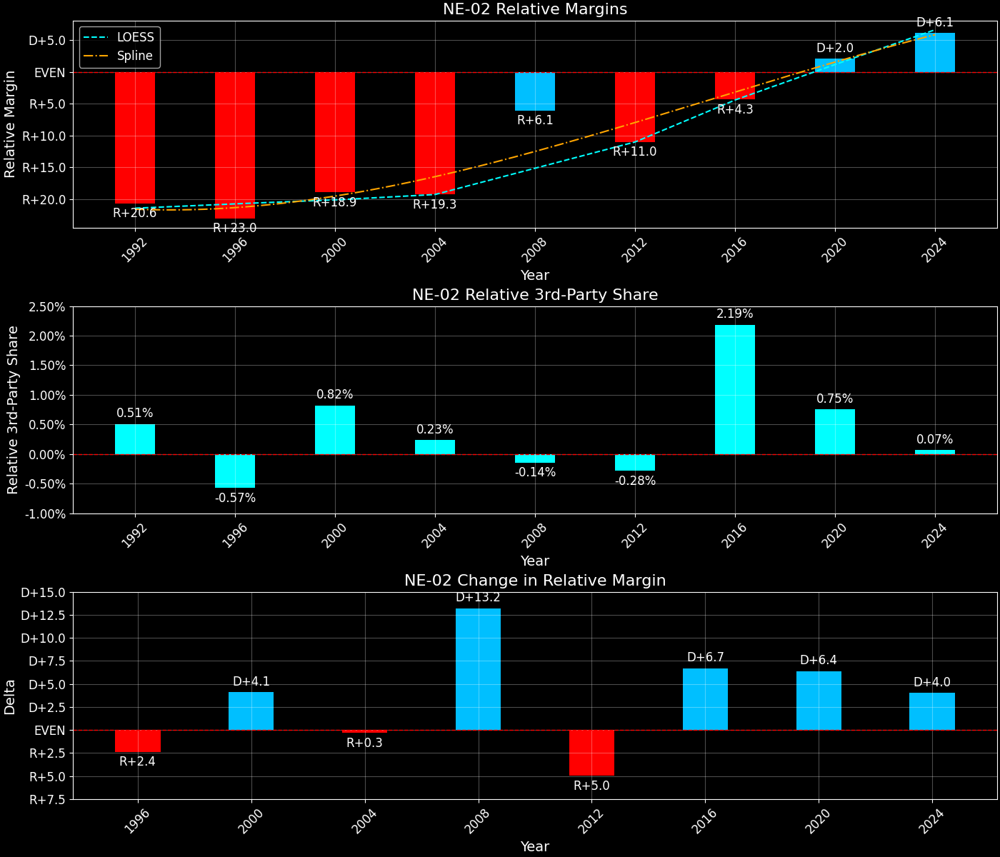

Nebraska's 2nd Congressional District (NE-02)

Margins · 3rd-Party share · Pres. deltas

Relative margins · Relative 3rd-Party · Rel. deltas
Nebraska's 2nd Congressional District (NE-02) — Total Data
| Year | D | R | State Margin | Nat. Margin | Rel. Margin | Total votes | EVs |
|---|---|---|---|---|---|---|---|
| 1992 | 78,701(32.4%) | 115,255(47.5%) | R+15.1 | D+5.6 | R+20.6 | 242,613 | 1 |
| 1996 | 84,666(38.0%)(Δ 5,965) | 116,892(52.5%)(Δ 1,637) | R+14.5(Δ D+0.6) | D+8.5(Δ D+3.0) | R+23.0(Δ R+2.4) | 222,660 | 1 |
| 2000 | 88,975(38.5%)(Δ 4,309) | 131,485(56.9%)(Δ 14,593) | R+18.4(Δ R+3.9) | D+0.5(Δ R+8.0) | R+18.9(Δ D+4.1) | 231,012 | 1 |
| 2004 | 97,858(38.5%)(Δ 8,883) | 153,041(60.2%)(Δ 21,556) | R+21.7(Δ R+3.3) | R+2.5(Δ R+3.0) | R+19.3(Δ R+0.3) | 254,032 | 1 |
| 2008 | 138,809(50.0%)(Δ 40,951) | 135,439(48.8%)(Δ -17,602) | D+1.2(Δ D+22.9) | D+7.3(Δ D+9.7) | R+6.1(Δ D+13.2) | 277,809 | 1 |
| 2012 | 121,889(45.7%)(Δ -16,920) | 140,976(52.9%)(Δ 5,537) | R+7.2(Δ R+8.4) | D+3.9(Δ R+3.4) | R+11.0(Δ R+5.0) | 266,727 | 1 |
| 2016 | 131,030(44.9%)(Δ 9,141) | 137,564(47.2%)(Δ -3,412) | R+2.2(Δ D+4.9) | D+2.1(Δ R+1.8) | R+4.3(Δ D+6.7) | 291,680 | 1 |
| 2020 | 176,468(52.0%)(Δ 45,438) | 154,377(45.4%)(Δ 16,813) | D+6.5(Δ D+8.7) | D+4.5(Δ D+2.4) | D+2.0(Δ D+6.4) | 339,666 | 1 |
| 2024 | 163,541(51.3%)(Δ -12,927) | 148,905(46.7%)(Δ -5,472) | D+4.6(Δ R+1.9) | R+1.5(Δ R+5.9) | D+6.1(Δ D+4.0) | 318,646 | 1 |
Column explanations
- Δ
- Change (delta) in the value from the previous election year.
- Year
- Election year.
- D
- Number of votes for the Democratic candidate (raw count(pct%)).
- R
- Number of votes for the Republican candidate (raw count(pct%)).
- State Margin
- Margin between the two major-party candidates, including third-party votes ((D - R)/total).
- Nat. Margin
- The national presidential margin for that year, including third-party votes ((D_total - R_total)/total_votes).
- Rel. Margin
- The presidential margin relative to the national presidential margin (Margin - Nat. Margin).
- Total votes
- Total voter turnout or ballots cast (when provided).
- EVs
- Number of electoral votes allocated to this state or unit.
Nebraska's 2nd Congressional District (NE-02) — Third-Party Data
| Year | D | R | Other votes | State 3rd-Party Share | 3rd-Party Nat. Share | 3rd-Party Rel. Share |
|---|---|---|---|---|---|---|
| 1992 | 78,701(32.4%) | 115,255(47.5%) | 48,657(20.1%) | 20.06% | 19.55% | 0.51% |
| 1996 | 84,666(38.0%)(Δ 5,965) | 116,892(52.5%)(Δ 1,637) | 21,102(9.5%) | 9.48% | 10.05% | -0.57% |
| 2000 | 88,975(38.5%)(Δ 4,309) | 131,485(56.9%)(Δ 14,593) | 10,552(4.6%) | 4.57% | 3.75% | 0.82% |
| 2004 | 97,858(38.5%)(Δ 8,883) | 153,041(60.2%)(Δ 21,556) | 3,133(1.2%) | 1.23% | 1.00% | 0.23% |
| 2008 | 138,809(50.0%)(Δ 40,951) | 135,439(48.8%)(Δ -17,602) | 3,561(1.3%) | 1.28% | 1.42% | -0.14% |
| 2012 | 121,889(45.7%)(Δ -16,920) | 140,976(52.9%)(Δ 5,537) | 3,862(1.4%) | 1.45% | 1.73% | -0.28% |
| 2016 | 131,030(44.9%)(Δ 9,141) | 137,564(47.2%)(Δ -3,412) | 23,086(7.9%) | 7.91% | 5.73% | 2.19% |
| 2020 | 176,468(52.0%)(Δ 45,438) | 154,377(45.4%)(Δ 16,813) | 8,821(2.6%) | 2.60% | 1.84% | 0.75% |
| 2024 | 163,541(51.3%)(Δ -12,927) | 148,905(46.7%)(Δ -5,472) | 6,200(1.9%) | 1.95% | 1.88% | 0.07% |
Column explanations
- Year
- Election year.
- D
- Number of votes for the Democratic candidate (raw count(pct%)).
- R
- Number of votes for the Republican candidate (raw count(pct%)).
- Other votes
- Number of votes for third-party (other) candidates (raw count(pct%)).
- State 3rd-Party Share
- Share of the vote received by third-party (other) candidates.
- 3rd-Party Nat. Share
- The national third-party share for that year (3rd-Party votes / total votes).
- 3rd-Party Rel. Share
- Third-party share relative to the national third-party share (3rd-Party share - Nat. 3rd-Party share).

Two-party margins · relative · deltas
Nebraska's 2nd Congressional District (NE-02) — Two-Party Data
| Year | D | R | 2-Party Margin | 2-Party Nat. Margin | 2-Party Rel. Margin | EVs |
|---|---|---|---|---|---|---|
| 1992 | 78,701(40.6%) | 115,255(59.4%) | R+18.8 | D+6.9 | R+25.8 | 1 |
| 1996 | 84,666(42.0%)(Δ 5,965) | 116,892(58.0%)(Δ 1,637) | R+16.0(Δ D+2.9) | D+9.5(Δ D+2.6) | R+25.5(Δ D+0.3) | 1 |
| 2000 | 88,975(40.4%)(Δ 4,309) | 131,485(59.6%)(Δ 14,593) | R+19.3(Δ R+3.3) | D+0.5(Δ R+8.9) | R+19.8(Δ D+5.6) | 1 |
| 2004 | 97,858(39.0%)(Δ 8,883) | 153,041(61.0%)(Δ 21,556) | R+22.0(Δ R+2.7) | R+2.5(Δ R+3.0) | R+19.5(Δ D+0.3) | 1 |
| 2008 | 138,809(50.6%)(Δ 40,951) | 135,439(49.4%)(Δ -17,602) | D+1.2(Δ D+23.2) | D+7.4(Δ D+9.9) | R+6.1(Δ D+13.4) | 1 |
| 2012 | 121,889(46.4%)(Δ -16,920) | 140,976(53.6%)(Δ 5,537) | R+7.3(Δ R+8.5) | D+3.9(Δ R+3.4) | R+11.2(Δ R+5.0) | 1 |
| 2016 | 131,030(48.8%)(Δ 9,141) | 137,564(51.2%)(Δ -3,412) | R+2.4(Δ D+4.8) | D+2.2(Δ R+1.7) | R+4.7(Δ D+6.5) | 1 |
| 2020 | 176,468(53.3%)(Δ 45,438) | 154,377(46.7%)(Δ 16,813) | D+6.7(Δ D+9.1) | D+4.5(Δ D+2.3) | D+2.1(Δ D+6.8) | 1 |
| 2024 | 163,541(52.3%)(Δ -12,927) | 148,905(47.7%)(Δ -5,472) | D+4.7(Δ R+2.0) | R+1.5(Δ R+6.0) | D+6.2(Δ D+4.0) | 1 |
Column explanations
- Δ
- Change (delta) in the value from the previous election year.
- Year
- Election year.
- D
- Number of votes for the Democratic candidate (raw count(pct%)).
- R
- Number of votes for the Republican candidate (raw count(pct%)).
- 2-Party Margin
- Margin between the two major-party candidates, ignoring third-party votes ((D - R)/(D + R)).
- 2-Party Nat. Margin
- The national presidential margin for that year, including third-party votes ((D_total - R_total)/total_votes).
- 2-Party Rel. Margin
- The presidential margin relative to the national presidential margin (Margin - Nat. Margin).
- EVs
- Number of electoral votes allocated to this state or unit.